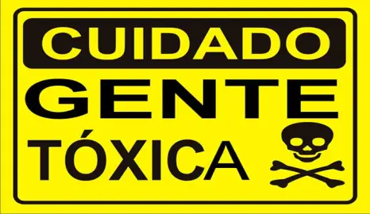

¿Qué es una relacion tóxica en línea?
Son aquellas,romántica,familiar,laboral que generan un impacto negativo en tu bienestar emocional y mental
¿Como se identificar una relacion toxica digital?
Los comportamientos toxicos en linea pueden ser variados y a menudo se mezclan con los que ocurren fuera de la pantalla.:
Control y Celos Excesivos:
- Exigir contraseñas de tus redes sociales o correo electronico.
- Revisar constantemente tus conversaciones o publicaciones.
- Enfadarse si interactuas con otras personas en línea.
- Monitorizar tu actividad en redes sociales o videojuegos
Manipulacion y Chantaje Emocionall
- Hacerte sentir culpable si no cumples sus deseos o demandas en línea.
- Amenazar con terminar la relación,divulgar información privada o hacerse daños si no haces lo que quieren
- Minimizar tus sentimiento o experiencias,haciéndote dudar de tu propia percepción.
Abuso Verbal y Psicologico
- Insultos,humillacioes,burlas o descalificaciones a través de mensajes o comentarios.
- Ciberacoso:enviar mensajes amenazantes,humillantes o repetitivos.
- "Gaslighting" en línea:hacerte dudar de tu cordura,memoria o percepción de la realidad a través de mensajes o conversacion.
Aislamiento:
- Intentar que pases menos tiempo con amigos,familia en linea o fuera de linea diciendote que solo puedes confiar en ellos.
- Criticar a tuus otras amistades o relaciones.
Falta de Respeto por los Limites:
- Ignorar tus peticiones de espacios o tiempo.
- Publicar informacion tuya sin tu permiso
- Invadir tu privacidad digital constantemente
Creación de Perfiles Falsos o Uso de Identidades Engañosas:
- Estar constantemente pendiente de tus notificaciones,esperando tus mensajes
- Sentir ansiedad si no puedes conectarte o si no recibes respuesta inmediata

¿Por qué son peligrosa?
Impacto en la Salud Mental
Pueden generar ansiedad,deprisión,baja autoestima,estrés y aislamiento social.Dificultad para Identificarlas
La distancia fisica puede hacer que ciertos comportamientos abusivos pasen desapercibidos o se minimicen.Riesgo de Grooming y Acoso:
En el caso de relacioones que involucran a menores,estos comportamientos pueden ser una puerta de entrada al grooming o al acoso seual.Daño a la Reputacion:
El ciberacoso o la difusión de información privada pueden dañar seriamente la reputación de una persona.
¿Qué hacer si estas en una relacion tóxica en línea?
Reconoce los comportamientos:
El primer paso es darte cuenta de que lo que estás viviendo no es saludableEstablece Límites Claros:
Comunica tus límites de manera firme.Si no son respetados, es una señal de alarma.Reduce o Bloquea la comunicación:
Si la persona no respeta tus límites o sus comportamientos son abusivos lo más saludable es bleoquearla en todas las plataformas.No compartas información privada:
Sé muy cuidadosa con la información personal que compartes en línea,especialmente con personas que no conoces bienGuarda Evidencia:
Si sufres acoso o amenazas,guarda capturas de pantalla de los mensajes o publicaciones.Esto puede ser útil si decides denunciarHabla con alguien de confianza:
Comparte tu situación con amigos,familiares o un profesional.No estás sola.Busca apoyo profesional:
Un terapeuta o consejero puede ayudarte a procesar la experiencia,recuperar tu autoestima y desarrollar estrateias para manejar estas situaciones.Denuncia si es necesario:
Si la situación involucra acoso, amenazas graves o contenido ilegal,considera denunciarlo a la plataforma(red social,app,etc) y .si corresponde ,a las autoridades.
¿Qué hecar si estás en una relación tóxica en línea?
Reconoce los comportamientos:
El primer paso es darte cuenta de que lo que estás viviendo no es bueno para vosEstablece límites claros:
Comunica tus límites de manera firme.Si no son respetados,es una señal de alarma.Reduce o bloquea la comunicación:
Si la persona no respeta tus límites o sus comportamientos son abusivos,lo más saludable es bloquearla en todas las plataformas.No compartas información privada:
Sé muy cuidadosa con la información personal que compartes en línea,especialmente con personas que no conoces bien.Guarda evidencia:
Si sufres acoso o amenazas,guarda capturas de patalla de los mensajes o publicaciones.Esto puede ser útil si decides denunciarBusca apoyo profesional:
Un terapeuta o consejero puede ayudarte a procesar la experiencia para manejar estas situaciones.Denuncia si es necesario:
Si la situación involucra acoso,amenazas graves o contenido ilegal,considera denunciarlo a la plataforma(red social,app,etc) y,si corresponde, a las autoridades.